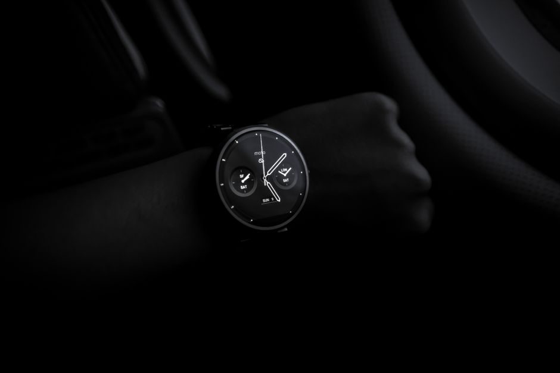

Huawei・中華ガジェット
スマートリング活動量計の測定精度と使いどころを検証
2026-10-29

指に着けるだけで心拍や睡眠を記録できるスマートリングが注目されています。ただ「どこまで正確なのか」は気になるところです。海外の研究データをもとに、測定精度の実態と活用のヒントを整理します。
スマートリングで測れる項目と仕組み
スマートリングは指先の血管から光学センサーで脈波を読み取り、心拍数・心拍変動(HRV)・血中酸素・皮膚温・睡眠の状態などを24時間記録する仕組みです。腕時計型と同じ光学式のセンサーを使っていますが、指先は血流が豊富で動きの影響を受けにくいため、安静時の心拍計測では有利とされています。一方でバッテリーやディスプレイを搭載するスペースが小さいため、詳細なデータ分析は専用アプリ側で行う設計が一般的です。
心拍数・心拍変動の精度はどの程度か
2025年にまとめられたスマートリングに関する系統的レビュー(約10万人のデータを含む107件の研究を分析)では、医療機器との比較で心拍数の相関係数がr²=0.996、心拍変動(HRV)の相関係数がr²=0.980という高い一致度が報告されています。また国内で紹介されている独立研究でも、安静時心拍数の計測誤差は医療用パルスオキシメーターとの差が平均で±2〜3bpm以内に収まる傾向が示されています。安静時であればかなり信頼できる精度といえそうです。
睡眠計測が得意な部分と苦手な部分
同じレビューによると、スマートリングは寝ている・起きているの判定(睡眠検出)については感度93〜96%と高い精度を示す一方、「今はレム睡眠か深い睡眠か」といった睡眠段階の細かい分類になると精度が大きく下がる傾向が確認されています。つまり「何時間眠れたか」はある程度正確に把握できても、「睡眠の質の内訳」まで厳密に当てにするのは難しい、というのが現時点の研究から見える実態です。大まかな傾向をつかむ道具として使うのが現実的と言えそうです。
腕時計型の活動量計との違いと使い分け
腕時計型の活動量計はディスプレイが大きく、通知確認やGPSでの運動記録など多機能である一方、手首は体動の影響を受けやすく、運動中の心拍数には多少のブレが出やすいとされています。対してスマートリングは軽量で装着したまま眠りやすく、安静時データの蓄積には向いていますが、画面がない分、その場で数値を確認する用途には不便です。普段の健康管理をさりげなく続けたいなら指輪型、運動記録や通知確認も重視するなら腕時計型、という使い分けが一つの目安になります。
スマートリングは安静時の心拍計測で高い精度が報告されていますが、睡眠段階の細かい分類などは発展途上の部分もあります。得意・不得意を踏まえ、大まかな体調管理の目安として活用するのがよさそうです。


読み込み中...